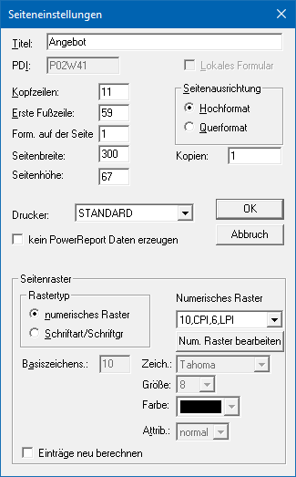
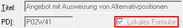
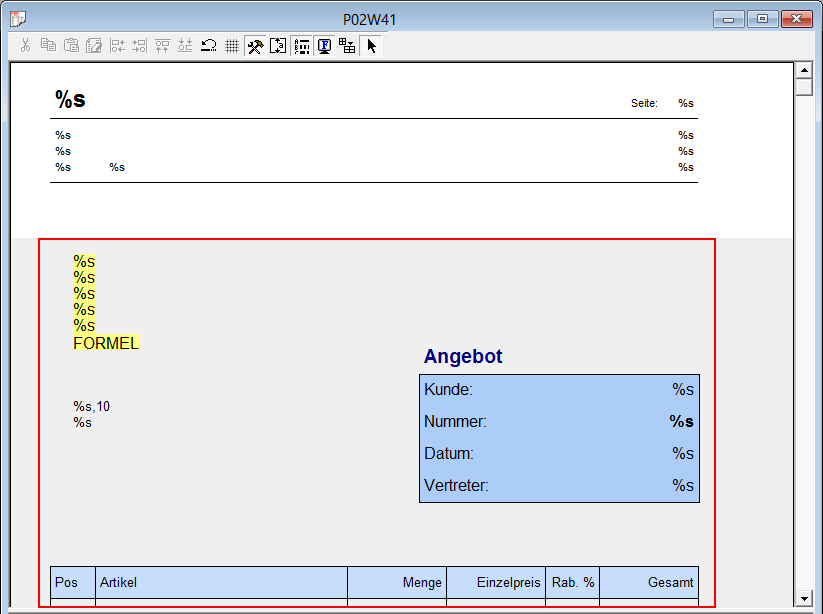
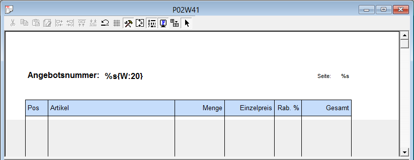
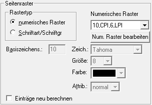

Ø Seiteneinstellungen
Über die Seiteneinstellungen können die Layout-Einstellungen bzw. Layout -Gestaltungen für das gewählte Formular vorgenommen werden.
Eigenschaftsfenster "Seiteneinstellungen"

Ø Titel
An dieser Stelle wird die Beschreibung des Formulars hinterlegt, welche bei lokalen Formularen nicht änderbar ist. Dieser Text wird an folgenden Stellen verwendet:
ü Name des Formulars in der Formularliste (Spalte "Title")
ü Dokumentenname im Spooler der WinLine
ü Fenstername bei einer Bildschirmausgabe in WinLine
ü Dateiname bei einer Windowsausgabe
ü Dateiname bei einem Mailversand
Hinweis
Mit Hilfe der VB-Script-Funktion "FormTitle" kann der Titel dynamisch (pro Ausgabe unterschiedlich) erzeugt werden.
Ø PDI
An dieser Stelle wird das PDI (Print Description Information) des Formulars angezeigt. Eine Änderung des PDIs ist nicht möglich.
Ø Lokales Formular
Wenn das Formular lokal gespeichert wurde, dann wird die Option entsprechend angezeigt. Die Checkbox dient der Information und kann nicht verändert werden.
Beispiel

Ø Kopfzeilen
Dieses Feld gibt an, nach wie vielen Zeilen der Mittelteil beginnen soll (wie lang der Kopfbereich sein soll). Dieser definierte Bereich wird im Formular Editor (Kopf) als weißer Bereich dargestellt.
Hinweis
Die Anzahl der Kopfzeilen kann kleiner sein, als der Kopf tatsächlich lang ist! In solch einem Fall wird die erste Mittelteilszeile erst dann gedruckt, wenn es keine Kopfzeilen mehr gibt.
Beispiel
In einem Angebotsformular ist hinterlegt, dass der Kopfbereich 11 Zeilen hoch ist. Auf der ersten Seite (Flag "A") müssen aber noch mehr Information im Kopf platziert werden. Bei der Ausgabe wird dieses automatisch vom Programm bedacht und der Mittelteil beginnt erst ab der ersten freien Zeile (hier "Zeile 35").

Ab der zweiten Seite (Flag "B") werden keine Kopfelemente mehr im Mittelteil platziert, wodurch die Ausgabe des Mittelteils ab Zeile 12 beginnen kann.

Ø Erste Fußzeile
Dieses Feld gibt an, ab welcher Zeile der Fußteil gedruckt werden soll.
Ø Form. auf der Seite
Hier kann eingestellt werden, wie oft das Formular auf einer Seite gedruckt werden soll (z.B. auf einer Seite sollen 3 Zahlscheine hintereinander bedruckt werden).
Ø Seitenbreite
An dieser Stelle kann die Seitenbreite definiert werden (hat nur Auswirkung auf die Ansicht im Formular Editor).
Ø Seitenhöhe
Mit Hilfe der Seitenhöhe wird angegeben, ab wann der Seitenumbruch stattfinden soll. D.h. wenn die auszugebenden Informationen die Seitenhöhe überschreiten, dann führt WinLine automatischen einen Seitenumbruch aus.
Ø Seitenausrichtung
Im Optionsfeld "Seitenausrichtung" kann gewählt werden, ob das Formular standardmäßig in Hochformat oder in Querformat ausgegeben werden soll. Diese Information wird beim Drucken an den Drucker übergeben.
Ø Kopien
In diesem Feld kann die Anzahl der Kopien, welche ausgegeben werden sollen, eingestellt werden (hierbei wird der erste Ausdruck mitgezählt, d.h. möchten man zum ersten Ausdruck 3 Kopien erhalten, dann muss hier 4 eingestellt werden).
Diese Einstellung wird jedoch nur wirksam, wenn in der Druckersteuerung der WinLine (für den betreffenden Drucker) die Anzahl der "Copies" 0 bzw. 1 beträgt und die Einstellung "Hochformat" verwendet wird.
Ø Drucker
Mit dieser Option kann ein Formular direkt einem Drucker zugewiesen werden. Aus der Auswahlbox kann einer der 50 Drucker hinterlegt werden, die auch in der WinLine angelegt werden können.
Ø kein PowerReport Daten erzeugen
Mit Hilfe dieser Funktion kann für das Formular definiert werden, ob die Daten für den Power Report im Hintergrund aufbereitet werden sollen oder nicht.
Seitenraster

Im Bereich "Seitenraster" kann die Rasterung für das Formular definiert werden.
Hinweis
Die Wahl des Seitenrasters hängt von dem zu definierenden Formular ab. In der Regel erlaubt eine kleinere Rasterung eine genauere Positionierung. Um Überschneidungen zu vermeiden, sollten Rasterung und verwendete Fonts allerdings korrelieren. Für das Bedrucken/Nachdrucken von Formularen (z.B. Umsatzsteuervoranmeldung) empfiehlt sich eine sehr feine Rasterung.
Die Wahl eines Fonts als Basiszeichensatz als Rastergrundlage ist z.B. beim Bedrucken von Zahlungsträgern mittels Matrixdrucker empfehlenswert.
Ø Rastertyp
Mit Hilfe der Option "Rastertyp" kann definiert werden, auf welcher Grundlage die Rasterung erfolgen soll. Hierbei stehen die folgenden Varianten zur Verfügung:
ü numerisches Raster
ü Schriftart / Schriftgröße
Ø Numerischer Raster (nur bei "numerisches Raster")
Aus der Auswahlliste kann ein numerisches Raster ausgewählt werden.
Ø Num. Raster bearbeiten (nur bei "numerisches Raster")
Mit Hilfe des Buttons "Num. Raster bearbeiten" können Rasterungen bearbeitet bzw. neue numerische Rasterungen definiert werden (nähere Information entnehmen Sie bitte dem Kapitel "Seiteneinstellungen - Numerische Raster").
Ø Basiszeichens. (nur bei "Schriftart / Schriftgröße")
An dieser Stelle kann eine der 10 vordefinierten Schriftarten ausgewählt werden. Die Definition der 10 Schriftarten erfolgt im Programm Customizing Tool Kit (CWLCTK.EXE) über den Menüpunkt "File - Edit Mesonic Fonts".
Ø Zeich. (nur bei "Schriftart / Schriftgröße")
Ø Größe (nur bei "Schriftart / Schriftgröße")
An dieser Stelle wird die gewünschte Schriftgröße definiert.
Ø Farbe (nur bei "Schriftart / Schriftgröße")
An dieser Stelle wird die gewünschte Schriftfarbe definiert.
Ø Attrib. (nur bei "Schriftart / Schriftgröße")
An dieser Stelle wird das Attribut (z.B. normal, bold oder italic) für die Schrift definiert. Es stehen die folgenden Einträge zur Verfügung:
Ø Einträge neu berechnen
Wenn die Einstellungen des Seitenrasters verändert werden, dann sieht das Formular für gewöhnlich ganz anders aus wie vorher. Damit nicht das komplette Formular neu erstellt werden muss, kann die Option "Einträge neu berechnen" aktiviert werden. Durch Anklicken des OK-Buttons werden anschließend alle Einträge gemäß den neuen Font-Einstellungen neu berechnet, wodurch das Formular fast so aussieht, wie vor der Änderung des Rasters.